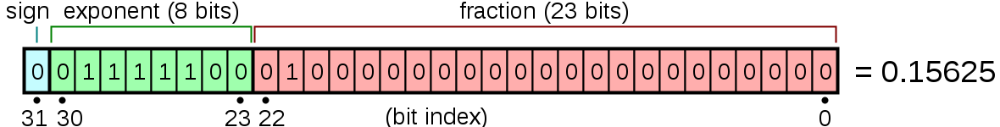
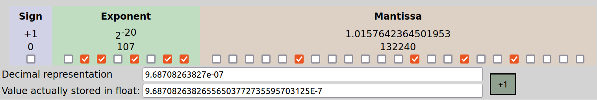
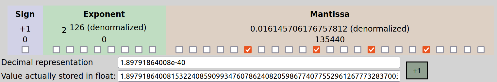
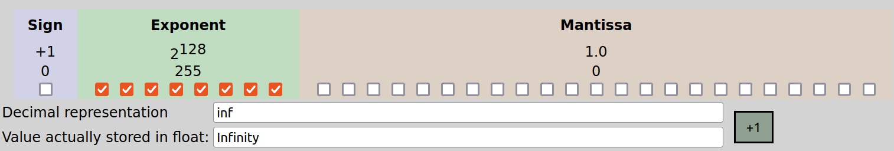
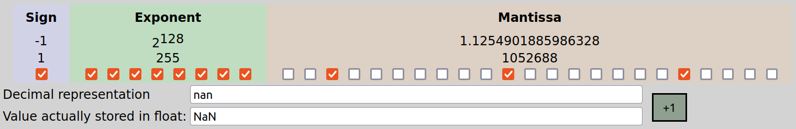
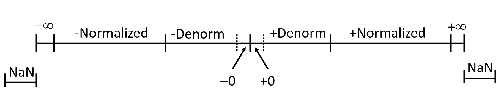
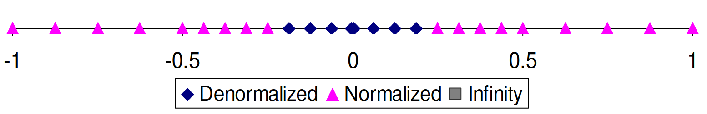
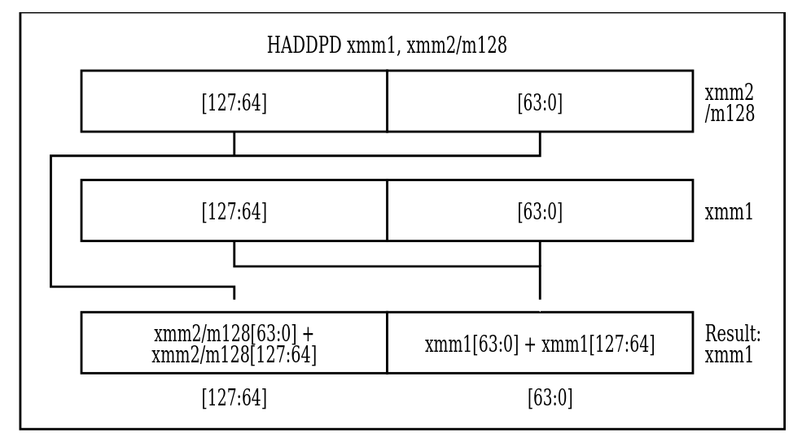
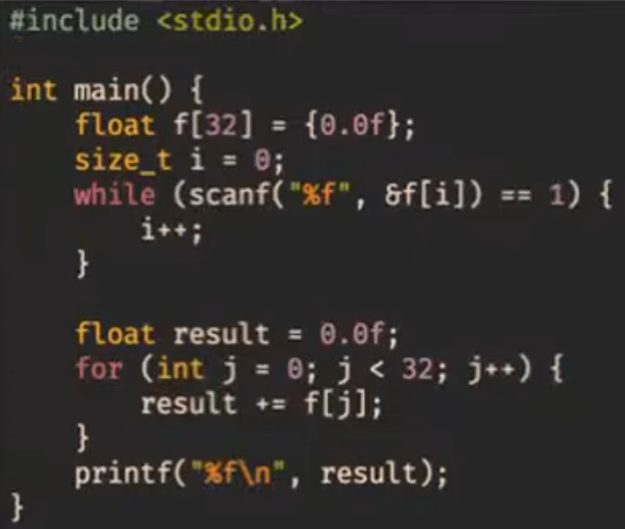
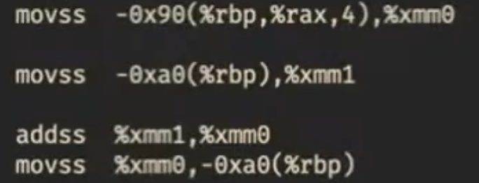

Вещественные числа
Формат представления числа
Для хранения и обработки вещественных чисел большинство процессоров используют формат IEEE 754. Есть удобный калькулятор. Рассмотрим, как устроен формат, на примере 32-битных вещественных чисел: 
Биты числа разделены на 3 группы:
- Знаковый бит. Один, старший бит. 0 -- число положительное, 1 -- отрицательное.
- Показатель степени. 8-битное целое число, занимает биты с 23-го по 30-ый. Означает степень двойки, на которую будет домножаться основаная часть числа, записанная далее.
- Дробная часть. 23-битное целое число, содержащее значащие биты вещественного числа.
Обозначим знаковый бит как sign, беззнаковое значение показателя степени как exp,
а беззнаковое значение дробной части как frac.
Значение числа в разных случаях
Итак, как числа получаются с помощью этих компонент? Есть несколько случаев:
- Если 1 <=
exp<= 254, число называется нормализованным. В таком случае оно равно \( -1^{sign} × 2^{exp-127} × 1,frac \). То есть знак и степень двойки домножаются на число, у которого в целой части стоит 1, а дробную часть состаляют 23 бита дробной части :-).
Т.к. мы хотим представлять как большие по модулю числа, так и близкие к нулю, то степень двойки должна принимать как положительные, так и отрицательные значения. Поэтому мы вычитаем из неё 127 (смещение), так степень станет принимать значения [-126; 127] (почему не могут быть -127 и 128, увидим ниже).

- Если exp=0, число называется денормализованным. В этом случае оно равно \( -1^{sign} × 2^{-126} × 0,frac \).

Нормализованные и денормализованные числа отличаются тем, что в первых перед мантиссой ставится целая часть 1, а во вторых -- 0. Это сделано для того, чтобы уметь представлять ноль. Если бы перед мантиссой всегда ставилась 1, то ноль бы не получался.
- Если
exp=255 иfrac=0, число называется бесконечностью и обозначается+infили-infв зависимости от знака.

Бесконечности нужны для обозначения очень больших по модулю чисел, для представления которых не достаточно 8-ми бит показателя степени.
- Если
exp=255 иfrac!=0, число называется нечислом и обозначается "NaN". Знак при этом ни на что не влияет.

Как видно, различных NaN-ов бывает много. Все они нужны для обозначения неопределённости в результате выполнения арифметических операций, например, 6/0 или sqrt(-3).
Итого, числовая прямая выглядит так: 
Особенности формата
-
Есть два нуля: +0 и -0. Однако это не приносит проблем при взаимодействии других чисел с ними. Оба нуля являются денормализованными.
-
+0 имеет все нулевые биты, то есть является нулём как 32-битное целое число.
-
Сравнение: наименьшее положительное нормализованное число (\( 2^{-126} * 1,0\)) больше наибольшего денормализованного числа (\( 2^{-126} * 0,111..1\)). Также любое положительное нормализованное число с меньшим
expменьше любого положительного нормализованного числа с большимexp. Таким образом, действительно, все положительные денормализованные числа меньше всех положительных нормализованных, а нормализованные расположены в порядке показателя степени. -
Такой же порядок остаётся, если сравнивать битовые представления вещественных чисел как знаковые целые числа! (Кроме NaN-ов).
-
Вещественные числа становятся более разреженными при увеличении их модуля. Чем число ближе к нулю, тем оно ближе к ближайшему к нему другому представимому числу. А точнее, денормализованные числа идут через одинаковый шаг. Нормализованные числа с
exp=1 идут через удвоенный шаг, сexp=2 -- через учетверённый, и так далее. Иллюстрация распределения чисел: 
Арифметические операции
- Умножение числа на степень двойки. Достаточно прибавить/вычесть из показателя степени. При этом может получиться бесконечность.
- Умножение двух чисел. Достаточно сложить их показатели степени и перемножить мантиссы.
При этом в мантиссе может также получиться число >= 2, тогда надо его нормализовать и прибавить 1 к показателю степени.
Если мантисса результата не влезает в
23бита, её надо округлить. Если хвост < 1/2 или > 1/2, то округляется вниз или вверх, соответственно. Если хвост в точности 1/2, то округлять всегда в одну сторону плохо, т.к. при большом количестве последовательных операций может накопиться существенная погрешность. Поэтому в этом случае округляется к ближайшему чётному (то есть, если предыдущий бит равен 0, то вниз, если 1 -- вверх). Пример:
|23 бита| |23 бита|
1,01.....1101111 -> 1,01.....11 // хвост < 1/2, округляем вниз
| | | |
1,01.....0110011 -> 1,01.....10 // хвост > 1/2, округляем вверх
| | | |
1,01.....0010000 -> 1,01.....00 // хвост = 1/2, округляем вниз
| | | |
1,01.....0110000 -> 1,01.....10 // хвост = 1/2, округляем вверх
- Деление аналогично.
- Сложение и вычитание. Привести оба числа к одинаковому показателю степени, выполнить операцию, привести к нормализованному или денормализованному виду и округлить по правилам выше, если потребуется.
Свойства арифметических операций
- При корректных арифметических операциях получается либо число, либо бесконечность.
- Сложение и умножение коммутативны
- Ассоциативности нет. Из-за округления в процессе выполнения операций могут получиться разные результаты. Например, \((3.14 + 2^{100}) - 2^{100} = 0\), но \(3.14 + (2^{100} - 2^{100}) = 3.14\). Из-за этого, для сохранения точности выполнять операции стоит в определённом порядке. Например, если хотим сложить массив вещественных чисел в одно число, лучше всего делать это в порядке сортировки чисел по возрастанию модулей.
- У конечных чисел есть обратный элемент по сложению.
- Монотонность: \(a\geq b \implies a+c\geq b + c\), если нет переполнений и NaN-ов.
Вещественные числа в C
Типы и их особенности в C
В C есть типы float, double и long double. На нашей системе они имеют размер 4, 8 и 12 байт соответственно. В 64-битном формате exp занимает 11 бит, а frac -- 52. Некоторые гарантии на арифметику:
- f = -(-f) -- верно всегда.
- (d < 0) => (2d < 0) -- верно всегда, в том числе если получается
-inf. - (d > f) => (-f < -d) -- верно всегда
- d * d >= 0 -- верно всегда
Считая, что int также 32-битный, рассмотрим приведения типов:
- float -> double: преобразутеся точно.
- double -> float: может потеряться точность или стать inf (если был большой по модулю показатель степени).
- int -> double: преобразуется точно, поскольку влезает в мантиссу.
- int -> float: будет округлён, если int большой по модулю и есть маленькие биты (не влезает в мантиссу).
- float/double -> int: дробная часть будет отброшена. Не определено, если целая часть не влезает в int.
Работа с вещественными числами в C
Для наглядности далее будет полезно запускать такой код. Он выводит все части числа в удобном формате:
#include <stdio.h>
#include <math.h>
#define CHECK(exp) printf(#exp " == %d\n", (exp))
int main() {
union {
float f;
unsigned u;
} uf;
while (scanf("%f", &uf.f) == 1) {
printf("f (%%e) = %e\n", uf.f);
printf("f (%%f) = %f\n", uf.f);
printf("f (%%g) = %g\n", uf.f);
printf("f (%%a) = %a\n", uf.f);
printf("u = %x\n", uf.u);
printf("sign = %u\n", uf.u >> 31);
printf("exp = %u\n", (uf.u >> 23) & 0xff);
printf("frac = %x\n", uf.u & 0x7fffff);
CHECK(fpclassify(uf.f));
CHECK(isnan(uf.f));
CHECK(isfinite(uf.f));
CHECK(isinf(uf.f));
CHECK(isnormal(uf.f));
}
}
Спецификаторы printf:
%f,%e,%g-- float/double в 10-ой системе счисления.%a-- float/double в 16-ой СС. Мантисса и показатель степени (c учётом смещения) разделаются символомp. Например,4.375=0x1.18p+2.
Функции для работы с вещественными числами:
int fpclassify(float/double)-- возвращает класс числа, то есть одно из следующих значений:FP_NAN,FP_INFINITE,FP_ZERO,FP_SUBNORMAL,FP_NORMAL.int isnan(float/double)-- является ли число NaN.int isfinite(float/double)-- является ли число не NaN и не бесконечностью.int isinf(float/double)-- 1, если +inf, -1, если -inf.int isnormal(float/double)-- является ли число нормализованным.
Чтобы использовать функции из math.h, необходимо компилировать программу с флагом -lm.
Инструкции для работы с вещественными числами
У процессора есть отдельные регистры для обработки нескольких значений за одну инструкцию и, соответственно, отдельные инструкции для работы с этими регистрами. Есть 128-битные регистры XMM0-XMM31. В них можно поместить, например, 2 double, 4 float, 4 int, 8 short и т.д. Также есть 256-битные регистры YMM0-YMM31, являющиеся расширениями соответствующих XMM (по аналогии с AX->RAX). Аналогично, есть их 512-битные расширения, называемые ZMM0-ZMM31.
Эти регистры исторически добавлялись в следующем порядке: XMM->YMM->ZMM. Инструкции для работы с YMM называются SSE, а для работы с ZMM -- AVX. Мы на курсе будем работать только с SSE.
SSE инструкции:
MOVAPD xmm1/m128 xmm2-- положить два double, записанные в xmm1 (или в памяти) в xmm2. Если переклыдавем из памяти, она должна быть выровнена на 16 байт.MOVUPD xmm1/m128 xmm2-- то же самое, только нет требования к выравниванию. Работает дольше. К счастью, и gcc при входе в функцию стек выравнивает на 16 байт, и *alloc выделяет память, выровненную на 16 байт, поэтому всегда можем использоватьMOVAPD.ADDPD xmm1/m128 xmm2-- прибавить два double из xmm1 или из памяти к xmm2 поэлементно.MOVSS e*x/m32 xmm2-- загружает в младшие 32 бита xmm2.HADDPD xmm1/m128 xmm2-- выполняет "горизонтальное" сложение в двух числах отдельно и записывает в результат эти результаты подряд: 
Все регистры XMM caller-saved (не надо сохранять внутри функции).
Как gcc компилирует работу с вещественными числами.
Посмотрим, как следующая программа выглядит при компиляции с разными оптимизациями: 
- Компилируем эту программу gcc без флагов оптимизации и в 32-битном режиме. Поскольку на 32-битной архитектуре мы не можем гарантировать, что процессор поддерживает SSE, то компилятор генерирует инструкции из устаревшего набора x87 (для сопроцессора). Мы с таким работать не хотим, поэтому идём дальше.
- Соберём без
-m32(то есть для 64-битной архитектуры). Получились SSE-инструкции, но пока что работающие с float-ми по-одиночке.  - Соберём с O3 и
-mavx -ftree-vertorize. Так мы скажем компилятору, что доступны инструкции AVX, и чтобы он векторизовал операции. Но он почему-то всё равно не векторизует :(
Чтобы печатать float-ы через printf на 32-битной архитектуре, используются инструкции x87. А на 64-битной параметры типа float и double в printf передаются через регистры xmm. Подробнее не будем изучать.
Алгоритм Кэхэна
Чтобы сложить много вещественных чисел более точно, можно использовать такой алгоритм, учитывающий ошибку округления:
function KahanSum(input)
var sum = 0.0 // Prepare the accumulator.
var c = 0.0 // A running compensation for lost low-order bits.
for i = 1 to input.length do // The array input has elements indexed input[1] to input[input.length].
var y = input[i] - c // c is zero the first time around.
var t = sum + y // Alas, sum is big, y small, so low-order digits of y are lost.
c = (t - sum) - y // (t - sum) cancels the high-order part of y; subtracting y recovers negative (low part of y)
sum = t // Algebraically, c should always be zero. Beware overly-aggressive optimizing compilers!
next i // Next time around, the lost low part will be added to y in a fresh attempt.
return sum
Идея в том, что отдельно считаются неточная сумма больших по модулю чисел (переменная sum) и компенсация для накопленной ошибки округления (переменная c).